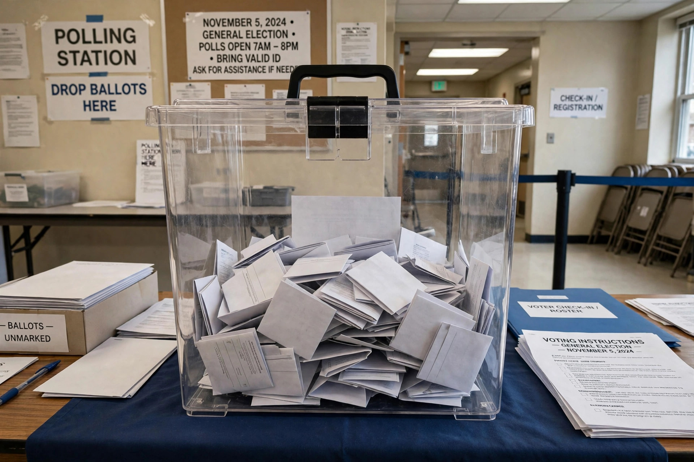

Ballot box

A ballot box is a temporarily sealed container with a narrow slot, typically located in a polling station, into which voters deposit their ballot papers during an election. Its design balances two requirements: ballots must be secret once deposited, and the box's integrity must be verifiable by officials, party agents and observers.
Design and procedure
Boxes are traditionally made of wood or metal and sealed with numbered tamper-evident seals or padlocks, after being shown empty to observers at the opening of the poll. Many countries — including France and much of post-Soviet Europe — use transparent plastic boxes so that observers can confirm the box starts empty and no pre-stuffed bundle is concealed, a direct safeguard against ballot stuffing. At the close of polls the boxes are transported under guard to counting centres, where seals are checked against records before opening.
Variants
Drop boxes for mail ballots, used widely in parts of the United States, are heavy steel receptacles emptied by election officials under chain-of-custody rules; they became politically controversial in the 2020 election cycle. Travelling or mobile ballot boxes serve remote communities and homebound voters in some countries, though observers sometimes criticise them as less secure.
Symbolism
"The ballot box" is a common metonym for democratic decision-making itself, as in the saying attributed in various forms that democracies resolve disputes at the ballot box rather than through violence.
See also: Secret ballot, Voting machine, Ballot stuffing.